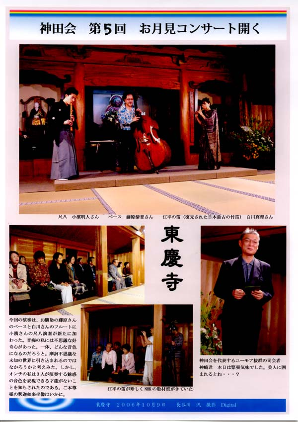
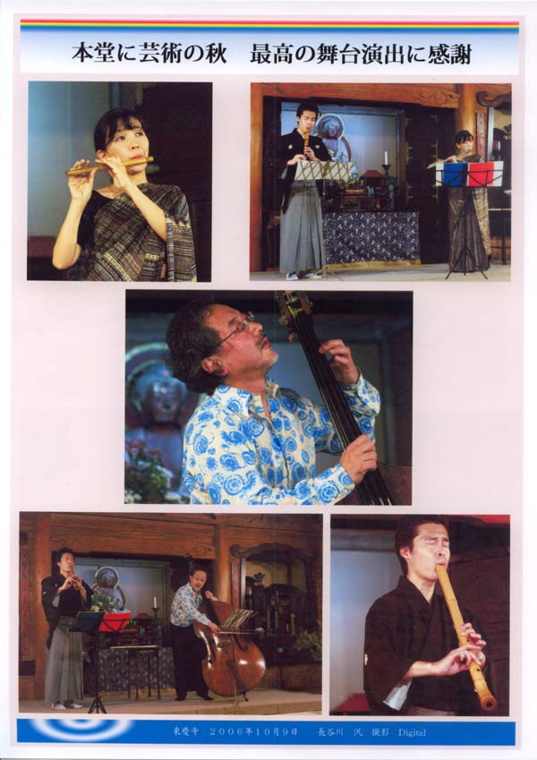
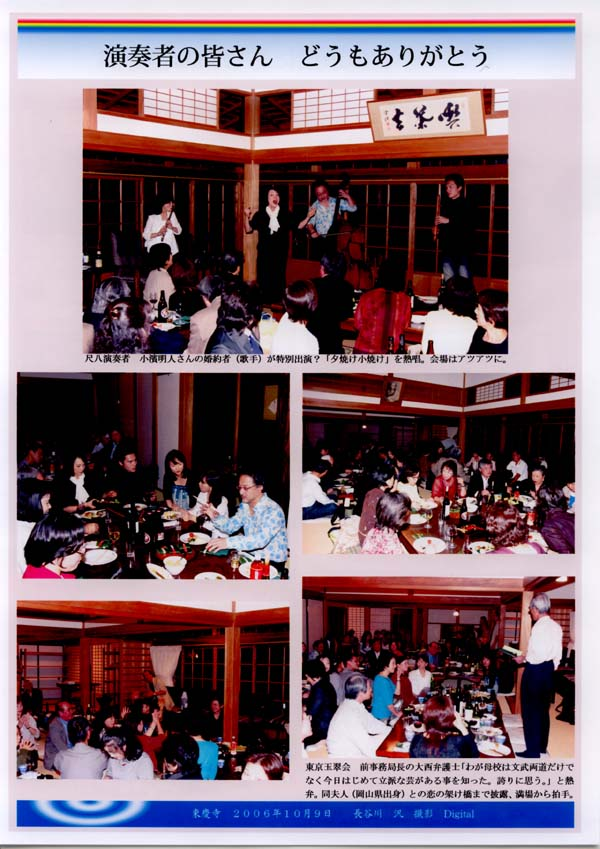
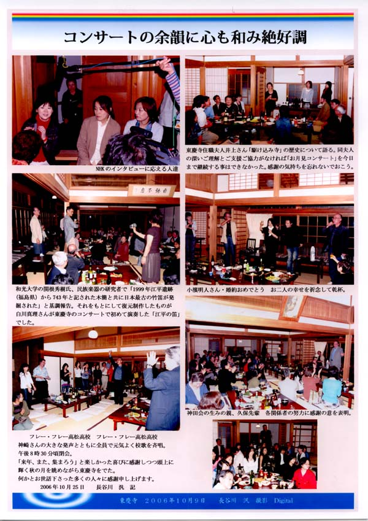

第２７回高高神田会寄合記
仲秋の名月に 古都鎌倉の風 を感じる会
「第５回 仲秋コンサート in 東慶寺」
２００６年(H18)１０月９日、
藤原清登さん（ベース：Ｓ４７年卒）
、
白川真理さん（フルート：Ｓ５２年卒）
、
小濱明人さん（尺八奏者：H６年卒）
を迎えて、鎌倉東慶寺で第５回仲秋コンサートが開かれました。
この日は、白川さんが演奏する天平の音色「江平の笛」に興味を持ったＮＨＫが取材に来ていました。




写真撮影、編集は長谷川汎さん(29年卒)